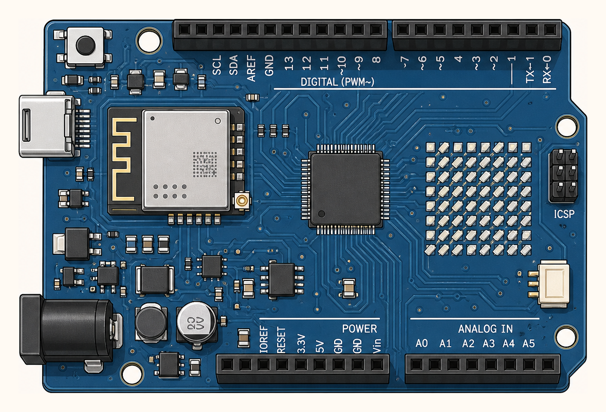

1
Controlador
Lee sensores, calcula llenado y coordina pantalla, luces, buzzer y envío de datos.
Ruta conectada basada en Arduino UNO R4 WiFi: mantiene formato Arduino, suma WiFi/BLE integrado y deja LoRa como extensión futura.

Lee sensores, calcula llenado y coordina pantalla, luces, buzzer y envío de datos.
El radio ESP32-S3 integrado permite enviar lecturas por WiFi al dashboard.
Sensor ultrasónico: mide distancia desde la tapa hasta el contenido del contenedor.
Pantalla local para mostrar porcentaje de llenado y estado operativo.
Semáforo verde, amarillo y rojo; alerta sonora cuando supera el umbral lleno.
Módulo externo tipo SX1276/RFM95 solo si se necesita mayor alcance que WiFi.
Precisión técnica: la opción base conectada es Arduino UNO R4 WiFi. Si se usa Arduino UNO/Nano clásico, la conectividad se agrega con un módulo WiFi o LoRa externo.